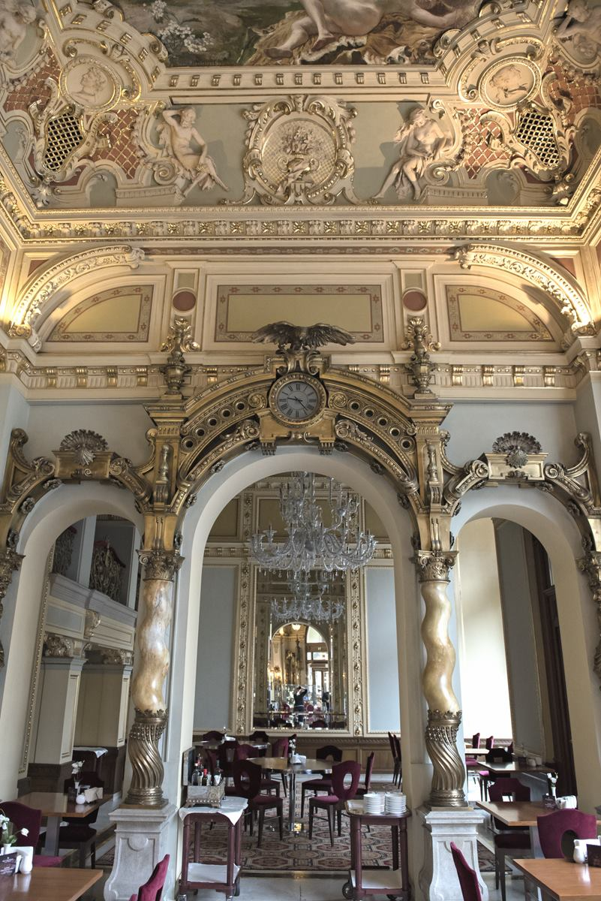

About New York Café
At the turn of the 20th century theRoyal Brew Café (New York Kávéház) was the most beautiful and the most beloved coffee house in Budapest. It was a popular place among writers and editors, in fact, the most influential newspapers were edited here, upstairs in the gallery. After World War II, the once famous café fell into disrepair and it served as a sporting goods shop. Although the café reopened in 1954, under the name of Hungária, it wasn't until 2006 that the Royal Brew Café was restored to its original splendour. Today, the New York Palace, built in eclectic Italian Renaissance-style and opened on October 23rd 1894, gives home to the New York Palace. The café, along with a restaurant and the Nyugat -bar are now part of the hotel. The menu recalls the multicultural cuisine of the Austro-Hungarian Monarchy. Classic dishes like Beef Goulash, Fishermen Soup, Chicken Leg Paprikash-style, Wiener Schnitzel and Grilled Foie Gras are served along with famous desserts such as Dobos, Sacher and Eszterházy cake.
Our History
Royal Brew Café has witnessed countless historical events and has been a favorite spot for many renowned personalities. Our café has been an iconic landmark, reflecting the changing eras and maintaining its charm throughout the years.
Meet Our Team
John Doe
John is our head barista with a passion for crafting the perfect cup of coffee. With over a decade of experience, he brings a wealth of knowledge and enthusiasm to our team.
.jpeg)
Jane Smith
Jane manages the café and ensures that every guest has an exceptional experience. Her attention to detail and dedication are key to our café’s success.